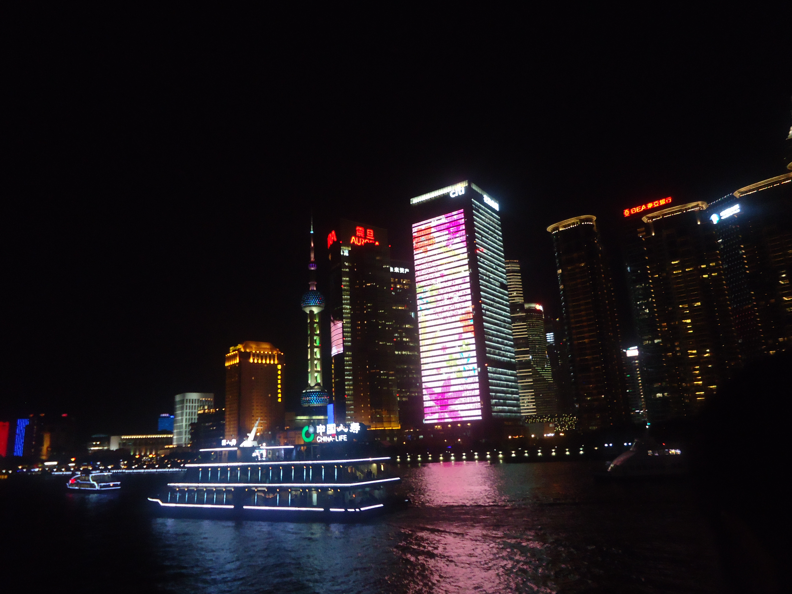

Currently a student of Bordeaux Science Agro, I am doing an internship with Clément Larue and Rémy Petit.
I was born at the Réunion Island, a French territory in the Indian Ocean. I had the opportunity to hike and discover the wonders this island has to offer.
Its unique fauna and flora with a lot of endemic species fascinated me. My need to understand more about the ecology and evolution of this ecosystem motivated me to
study them. I am sure a better comprehension of the differents ecosystems and the evolution of the species that composed them will allow better preservation program.
For more information feel free to contact me at timo.renard@hotmail.fr.

Intensive two-year study course of Biology, Chemistry, Physics, Geology and Mathematics preparing for the competitive entrance examinations to the French ‘Grandes Écoles’.
Erasmus at the University of Life sciences of Norway
with courses on Ecological entomology, Fish Physiology and Aquatic Adaptations and Tropical Rainforest Ecology and Conservation.
Pre-speciality Forestry
with courses on forest management, forest ecology, tree recognition and vegetal physiology.
M1 Internship : Behavioural study of Monchamus Galloprovincialis , the european vector of the pine wood nematode Bursaphelenchus xylophilus.
at Biogeco with Mr Hervé JACTEL and Mr Jean-Baptiste RIVOAL.
Gap year 6 month internship : Study of the pollination of the chestnut
at Biogeco with Mr Rémy PETIT and Mr Clément LARUE
This student association act as an intermediate between companies and the student of the school for paid project.
I was at the head of the project division at the start of the association, I oversaw the first project of the association.
| French | Native |
| English | Bilingual : Obtention of TOEIC with a score of 980/990
Linguistic trip in South-Africa and Australia Erasmus in Norway |
| Chinese | Level B2 : Studied for seven years in middle and highschool
Linguistic exchange in China with a student from Tianjin |
| Pack office | Mastering |
| QGis and ArcGis | Mastering |
| Python | Utilisation |
| R and R-studio | Utilisation |
| HTML and CSS | Utilisation |
I have always been curious to discover other places and cultures, I think there is two reasons for that. First my parents cultivated my curiosity
with a lot of books and we traveled together during my childhood. Secondly the Reunion island is an incredible melting pot with people from Asia, Europe and
Africa. In french Réunion mean gathering, even if the name of the Island doesn't come from there, it is an ideal name for it.
I decided to learn chinese when I entered middleschool. Four years later when I was fourteen I traveled with my class to China for
a linguistic exchange with student from Tianjin. We also had the opportunity to visit Beijing and Shanghai,
this was a fantastic experience and encouraged me to discover more country.
The next 2 years I was going in linguistic trips to Australia and South-Africa
with the association BEST "Bourbon Échanges Scolaires Transocéans".
During this trips we had english courses the morning and we visited the afternoon, we were in homestay so we could learn more about this country and its people.
In Australia at Pearth, I really appreciatied the aborigene culture and the diversity of the fauna and the flora.
In South-Africa we had the pleasing opportunity to learn more about the culture and historic of this country.
Furthermore I had another incredible occasion when I visited my brother in South-Korea during his Phd.
We traveled together to Japan, we visited Osaka, Kyoto and Tokyo. I really appreciated the japanese culture, mainly the food I have to admit it,
the last night of our trip in Japan we climbed the Mount Fuji
The last trip I took was in Norway for my Erasmus exchange. The University is
at Ås which is a very beautiful campus. I also had the chance to travel
to Tromso, the third largest city in the arctic circle, where I learned more
about the Sami culture. I also could fulfill one of my life goal and see aurora.
Here I will talk about my next trip which is a tour of Europe. I plan on visited at least one National Park for each country dependent on the side of the country starting with Spain then going to Greece and to Danemark with every state in between.
Sports : I was hiking a lot in Reunion island. It is a beautiful place, the mountain shows some breathtaking view.
I also did 3 years of swimming in a club and I still love to swim from time to time.
Finally I did more than ten years of judo.
Hobbies : Aventure, fantastic, scence-fiction /reading
I learned to play chess with my father and I never stopped.
In highschool and at Bordeaux Sciences Agro, I founded chess club to help people learn and progess.

Shangai 2014

Tianjin 2014
Shangai 2014

Australia, Caversham Wildlife Park 2016

Australia, Caversham Wildlife Park 2016

South Africa, Cape Town 2017

South Africa, Cape Town 2017

South Africa, Cape Town 2017

South Africa, Cape Town 2017

Norway, Tromsø 2021

Norway, North of Tromsø 2021

Norway, North of Tromsø 2021

Norway, North of Tromsø 2021